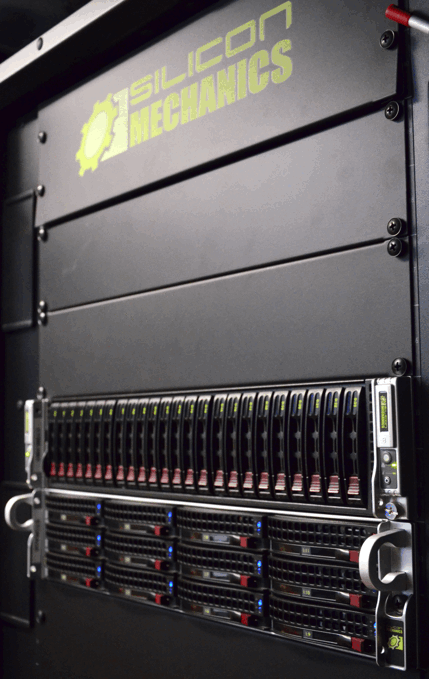
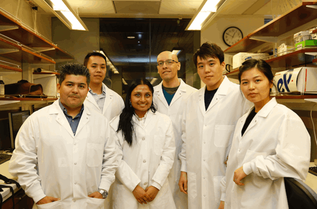
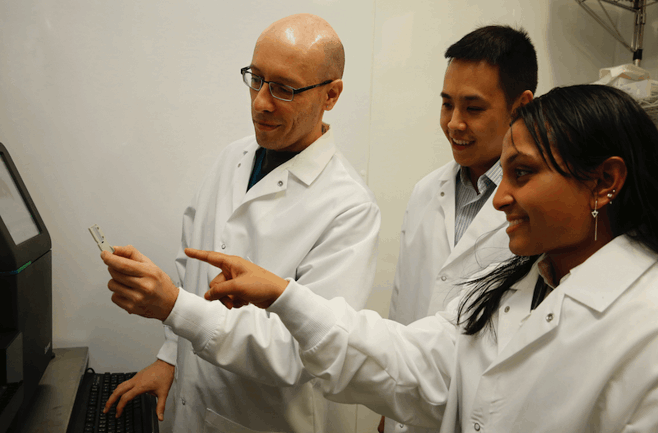

NGS pipelines for single-cell RNA-seq, Hi-C, metagenomics, variant discovery, genome chromatin and epigenetic structures, for clinical and personal genomics.

Scalable data analysis pipelines using a 1.5 PB, 500-core compute cluster with Kubernetes, NextFlow, Docker.

Bioinformatics for Next Generation Sequencing (NGS) clinical and personal genomics. Interdisciplinary research and novel applications of genomic sequencing and bioinformatics.

Algorithmic Information Theory, Computability, and Biologically-Inspired Computing. Emergence, complexity, information content and compressibility of epigenetic networks.
High-throughput bioinformatics infrastructures for cluster and cloud computing platforms: Scalability of data analysis pipelines using distributed computing; Cross-platform bioinformatics through Docker virtualization; Visualization of genomic data on cloud databases using HTML5 / D3.js and in-browser computing.
Bioinformatics for Next Generation Sequencing (NGS) clinical and personal genomics: NGS analysis pipelines for single-cell RNA-seq, Hi-C, metagenomics, variant discovery, genome assembly; Integrative analysis of variation, expression, chromatin and epigenetic data from TCGA, Encode, 4DN; Metabarcoding for conservation and biodiversity monitoring using environmental DNA (eDNA).
Interdisciplinary research and novel applications of genomic sequencing and bioinformatics: Portable NGS and bioinformatics with Nanopore Minion and Intel Next Units of Computing (NUC); Touch-enabled, mobile computing interfaces for personal genomics and clinical NGS data visualization.
Algorithmic Information Theory, Computability, and Biologically-Inspired Computing:. Emergence, complexity, information content and compressibility of epigenetic networks; Integrating DNA computing with NGS sequencing for reading molecular output with high I/O; Computability and decidability of biologically-inspired and DNA computing models.
Learn more on our research and follow us at Research Gate.